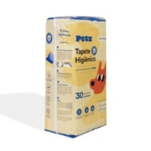

Tapete Higiênico Petz para Cães

Preço: R$ 89,99
- Indicado para cães;
- Supermacio;
- Tecnologia para máxima absorção com extra gel;
- Proteção contra vazamentos;
- Atrativo canino;
- Adesivo no verso dos tapetes para melhor fixação, tanto no chão, quanto na parede;
- Ideal para todos os ambientes;
- Disponível em embalagem com 30 unidades.